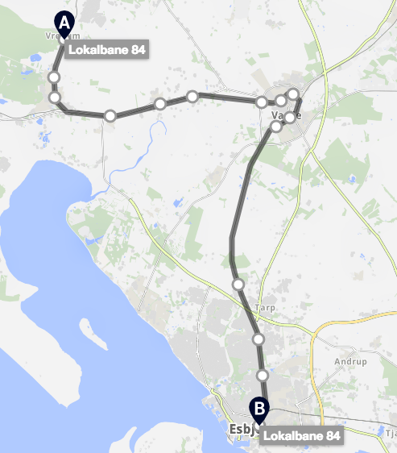
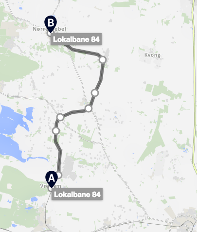

Hvordan kommer jeg med tog til Vrøgum?
Fra Vrøgum kan du komme med tog mod Esbjerg med Lokalbane 84 og Nørre Nebel med Lokalbane 84.
Lokalbane 84 mod Varde stopper på: Baunhøj st., Oksbøl st., Billum st., Janderup st., Hyllerslev st., Boulevarden st., Varde Vest st., Fristadsvej st., Varde st., Varde Kaserne st., Guldager st., Gjesing st., Spangsbjerg st., og Esbjerg st. Toget går ca. en gang i timen.

Lokalbane 84 mod Nørre Nebel stopper på: Jegum st., Dyreby st., Henne st., Outrup st., Løftgård st., Lunde J st., og Nørre Nebel st. Toget går ca. en gang i timen.
